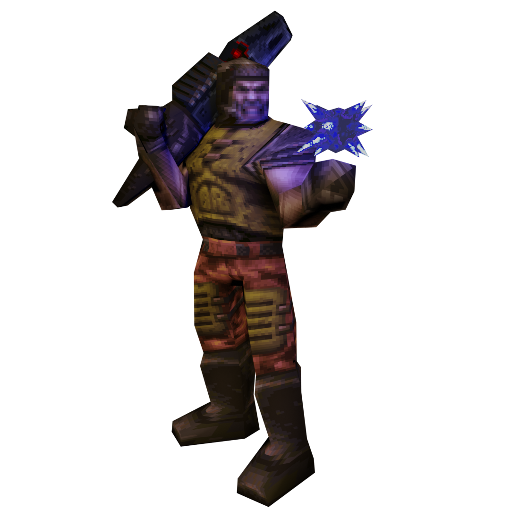
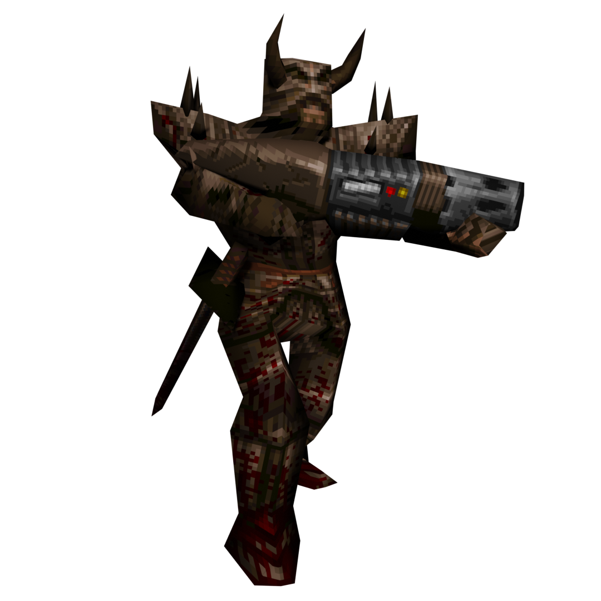
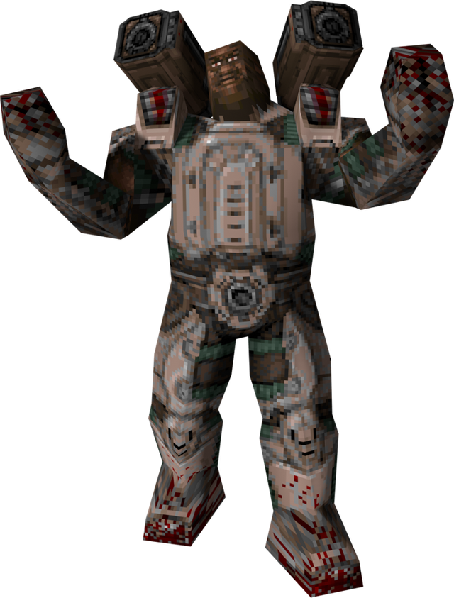
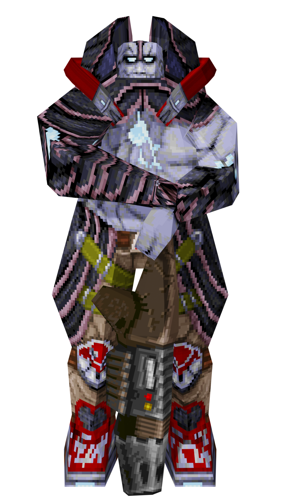
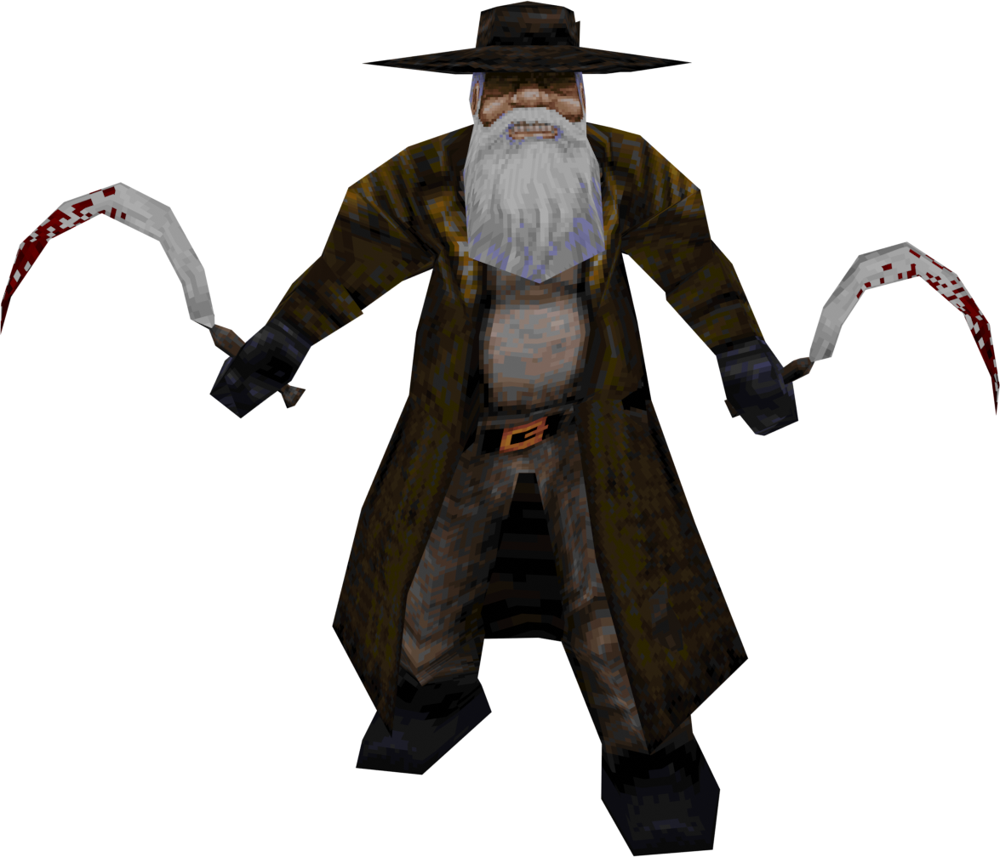
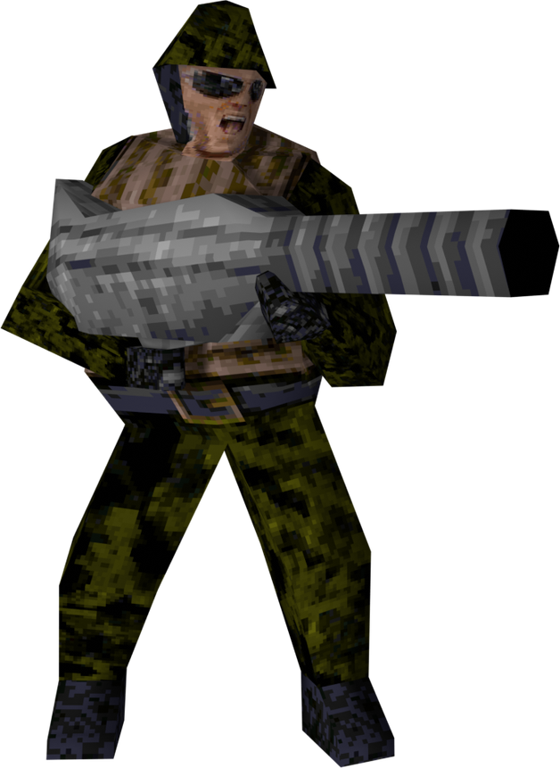

Champions
Ranger | Death Knight | Nyx | Doom Slayer | Commander Keen | Keel | Scalebearer | Sorlag | Slash | Anarki | Galena | Duke Nukem | Caleb | Intruder | Big John
Ranger

First Appearance : Quake
Active Ability : Dire Orb
Ranger can throw a ball of eldritch energy and teleport to it. Two beings cannot occupy the same space at once;
Ranger will be left standing in a pile of the destination's viscera.
Passive Ability : Son of a Gun
Self damage is halved, allowing Ranger to rocket jump and nail jump more than other champions.
Death Knight

First Appearance : Quake
Active Ability : Flame Strike
Death Knight swings his sword, unleashing five flying fireballs in a fanning formation. If a fireball is low enough to the ground
it will leave a trail of flames in its wake. The flames will set on fire anyone walking through them. The fireballs explode on impact.
Passive Ability : Forged Skin
Death Knight cannot be harmed by fire or lava.
Passive Ability : Charring
When Death Knight strikes an opponent with his sword, he sets that opponent on fire.
Nyx

First Appearance : Quake Champions
Active Ability : Ghost Walk
Nyx hops briefly into a parallel dimension, effectively rendering her invisible to her enemies. After 3 seconds Nyx will hop back into the Dreamlands,
telefragging any unfortunate souls that happen to be in her re-entry point.
NOTE: Ghost Walk currently does not allow Nyx to pass through projectiles or players. This is planned to be changed in a future update.
Passive Ability : Wall Jump
Nyx is able to jump while in the air once if she's next to a wall.
Doom Slayer

First Appearance : Doom
Active Ability : Berserk
Doom Slayer explodes into a burning rage for 5 seconds, unleashing his fists on any hapless demons and champions who get in his way.
Doom Slayer's movement increases and he gains a burst of speed when he punches in the air. His fists deal roughly three times their normal damage.
Passive Ability : Double Jump
Doom Slayer can jump while in the air once, allowing him to slow his fall and disrupt rocket predictions.
Commander Keen

First Appearance : Commander Keen in Invasion of the Vorticons
Active Ability : Neural Stunner
Commander Keen's trusty sidearm stuns foes in place, disrupting their ability to evade and attack for 3 seconds.
The Neural Stunner can be fired up to 3 times in a row on a full charge; successive shots stack the stun time.
Use the opportunity to follow up with a rocket or pogostick combo!
Passive Ability : Pogo Mastery
Commander Keen's melee weapon is a pogo stick he found on Mars; his unsurpassed skill with the device allows him to alter his direction of movement mid-bounce.
Holding jump while touching the ground will cause Keen to leap to incredible heights. Landing on an enemy will severely damage them.
The pogo stick can be hot swapped to by using the jump input mid-air, while using the attack input will hot swap back to the previous weapon.
Passive Ability : Odd One Out
Being an 8 year old boy, Commander Keen is shorter than the other champions by a significant amount. This can make him harder to hit.
Keel

First Appearance : Quake III Arena
Active Ability : Grenade Swarm
Keel is equipped with grenade launchers which operate on a cooldown. When the multi-grenade connects with a target or after 2.5 seconds of bouncing,
it explodes into multiple mini-grenades. Each grenade takes 15 seconds to cooldown, and up to 3 multi-grenades can be stored for use.
Passive Ability : Reinforced
Keel has 60% self damage reduction. Splash damage is reduced by 20%; this stacks with the self damage reduction.
Passive Ability : Stockpile
Keel can reduce the cooldown of his ability by 10% by collecting any ammo box.
Scalebearer

First Appearance : Quake Champions
Active Ability : Bull Rush
Scalebearer leads the way by charging forward with reckless abandon, dealing massive damage to anyone in his path
like a rampaging shoggoth to albino penguins. The amount of damage dealt depends on his speed upon impact.
Passive Ability : Acceleration
Scalebearer will gain speed while moving in a straight line.
Passive Ability : Heavyweight
Letting his momentum carry him, Scalebearer brings the hurt simply by running into his enemies.
Sorlag

First Appearance : Quake III Arena
Active Ability : Acid Spit
Sorlag spits five blobs of acid at her enemies, burning their flesh and poisoning them with its toxicity.
The acid also sticks to surfaces, poisoning anyone who touches it.
Passive Ability : Acid Fiend
Sorlag is immune to the effects of acid and slime.
Passive Ability : Leaping Lizard
Sorlag can instantly alter her direction of movement in the air, allowing her to make sharp turns at high speed.
Sorlag also accelerates quickly while moving in the air.
Passive Ability : Amphibious
Sorlag is an excellent swimmer and can breathe underwater.
Slash

First Appearance : Quake III Arena
Active Ability : Plasma Trail
Slash leaves a stream of energy behind her. The plasma trail will damage any enemy that touches it,
and when the ability button is pressed again, the trail will explode, damaging nearby enemies.
Passive Ability : Crouch Slide
Perform a crouch slide by holding the jump input just as you land on the ground after jumping or falling,
vastly increasing Slash's movement speed.
Anarki

First Appearance : Quake III Arena
Active Ability : Injection
Anarki instantly heals himself for 50 points and receives a permanent boost to his health.
He also receives a speed boost for 5 seconds.
Passive Ability : Air Control
Anarki can instantly change his velocity direction while midair.
Passive Ability : Anti-Gravity
Anarki's hoverboard allows him to fall from any height unscathed.
Galena

First Appearance : Quake Champions
Active Ability : Unholy Totem
Galena throws down up to 3 totems to heal both herself and her allies for 50 points,
or cause 40 damage to her foes in a deadly area of effect. If 3 totems are active,
healing will overstack and explosion damage will increase to 60.
Passive Ability : Channeling
Picking up health kits reduces Galena's ability cooldown by 5%. Picking up the Mega Health will reduce it by 10%.
Duke Nukem

First Appearance : Duke Nukem
Active Ability : Devastator
Straight out of the Pentagon's top secret labs comes this double barreled brute of a weapon
which lets loose swarms of miniature stinger missiles in the direction of your enemies.
Passive Ability : Jetpack
Duke's government-issue jetpack is one of his greatest tools, whether in mortal conflict against raging aliens
or in personal grudge matches in the Arena Eternal. Jump, then press and hold the jump input to fly for a brief period of time.
Standing still while activating it will send Duke straight up, while moving in a direction before activation
will cause Duke to fly in that direction.
Passive Ability : Duke Talk
Duke will comment on almost everything he does. This can give away your position,
but your opponents might be too distracted by the quips to take advantage of this.
Caleb

First Appearance : Blood
Active Ability : Dynamite
Caleb will light a bundle of dynamite. A subsequent press of the Ability or Shoot inputs will throw the dynamite.
The dynamite has a timed fuse that lasts 6 seconds. If thrown with the Ability input the dynamite will wait for the fuse.
If thrown with the Shoot input the dynamite will explode on impact. Holding onto the dynamite too long is... fatal.
Passive Ability : Life Essence
Gibbing monsters or fragging champions will drop a still-beating Life Essence that heals Caleb and his allies for 25 points of health.
Passive Ability : Soul Burned
Caleb will taunt his victims as he frags them, and comment on the weapons and some of the artifacts he picks up.
This can give away your position, but your opponents might be feeling the burns too much to take advantage of this.
The Intruder

First Appearance : Dusk
Active Ability : Fast Fire Totem
This artifact doubles the Intruder's firing rate with all weapons for roughly 6 seconds.
Passive Ability : Phillie Phanatic
The Intruder can pick up and throw just about any object that isn't nailed down. Different objects may have different effects.
Passive Ability : Return to Sender
The Intruder can use his twin sickles to deflect incoming enemy projectiles, turning their own attacks against them.
Passive Ability : Sturdy Legs
The Intruder does not take fall damage.
Passive Ability : Deep Lungs
The Intruder takes a really really *really* deep breath before diving underwater.
Big John

First Appearance : Dusk
Active Ability : Big Barrage
Big John equips his Big Gun and unleashes a full-auto barrage of bullets. He becomes immobile but incoming damage is reduced by 67%.
Activating the ability again will put the Big Gun away and the remaining ammunition is subtracted from the cooldown.
Passive Ability : Stockpile
Big John can reduce the cooldown of his ability by 10% by collecting any ammo box.